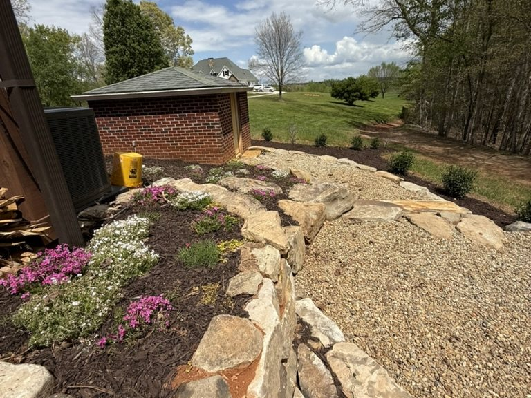

01 · Landscape Design & Installation
Landscape Design & Installation
A strong landscape starts with a plan. We design planting layouts, bed lines, transitions, focal points, access paths, and outdoor spaces around your home, your property, and how you want to live outside. Our planting work is built around mountain conditions: sun, shade, slope, clay, deer pressure, drainage, and long-term maintenance.
- Landscape design, layout, and planting design
- Bed shaping, focal points, and access paths
- Mountain home and lake house landscaping
- Low-maintenance, climate-appropriate installation